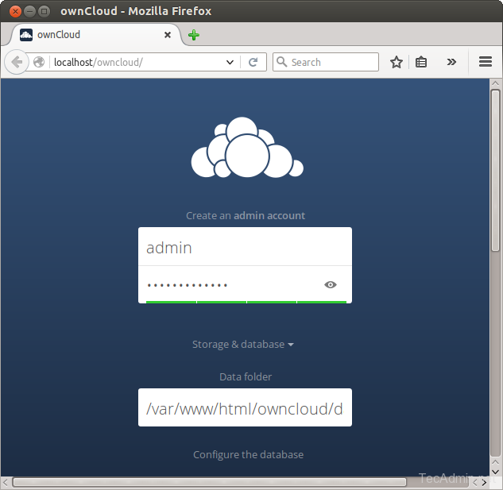
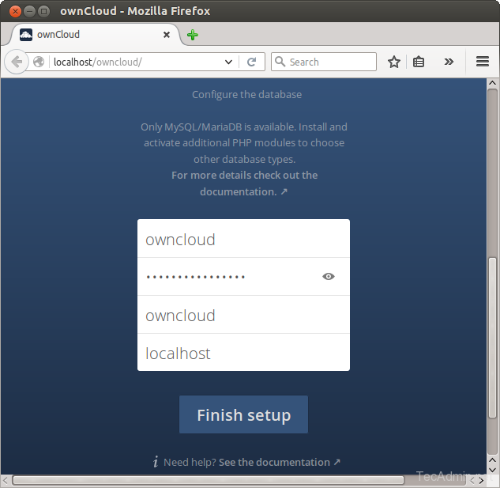
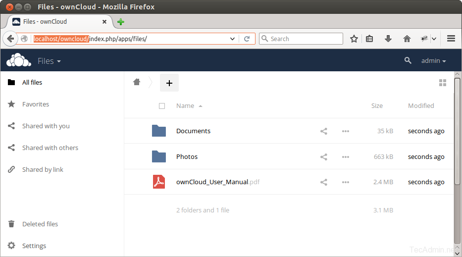

mysupercloud.ru
Главная
Установка owncloud Ubuntu 16.04
Установка owncloud Ubuntu 16.04
Программы Июнь 15, 2016 20 admin
OwnCloud позволяет получить доступ к данным и файлам через веб-интерфейс. Он также реализует возможности для синхронизации и обмена данными между устройствами. С помощью OwnCloud вы можете очень легко настроить ограничения доступа к файлам по ACL для каждого пользователя. У программы есть свои клиенты под такие системы, как Windows, Linux и MacOS, а также мобильные приложения для Android и iOS. С помощью них вы можете поддерживать синхронизацию данных на всех устройствах.
В этой инструкции будет рассмотрена установка OwnCloud 9 Ubuntu 16.04. Все ниже перечисленные действия также подойдут для других версий Ubuntu, Linux Mint или даже Debian.
OwnCloud написан на php, поэтому перед тем, как устанавливать саму программу нам в первую очередь необходимо установить LAMP сервер. В этот набор входят веб-сервер Apache, сервер баз данных MySQL и язык программирования PHP.
Подробно установка и настройка lamp в Ubuntu 16.04 уже описывалась в одной из предыдущих статей. Сегодня же мы просто рассмотрим самый быстрый способ, для ленивых. Но заметьте, что сервер все-равно придется настраивать.
Если у вас уже установлено все необходимое программное обеспечение, можете пропустить эти команды. Если же нет, устанавливаем менеджер установки программ tasksel:
sudo apt-get install tasksel
И затем одной командой устанавливаем все необходимое программное обеспечение:
sudo tasksel install lamp-server
После успешного завершения настройки lamp сервера в вашей системе. Давайте скачаем самую последнюю версию исходников OwnCloud из официального сайта.
Мы не будем использовать репозитории Ubuntu, поскольку нам нужна установка OwnCloud 9 ubuntu 16.04, а в официальных репозиториях может быть уже устаревшая версия. Для загрузки выполните такие команды:
cd /opt
$ wget https://download.owncloud.org/community/owncloud-9.0.1.tar.bz2
Теперь извлечем все скачанные файлы в корневую папку веб-сервера и настроим нужные разрешения на наши файлы и каталоги:
cd /var/www/html
$ sudo tar xjf /opt/owncloud-9.0.1.tar.bz2
$ sudo chown -R www-data:www-data owncloud
$ sudo chmod -R 755 owncloud
После того, как код будет распакован нужно создать базу данных MySQL и учетную запись пользователя для настройки OwnCloud. Для этого выполните такие команды:
mysql -u root -p
Enter password:
mysql> CREATE DATABASE owncloud;
mysql> GRANT ALL ON owncloud.* to 'owncloud'@'localhost' IDENTIFIED BY '_password_';
GRANT ALL ON owncloud.* to alensav@192.168.1.42 IDENTIFIED BY 'myub485127sav';
mysql> FLUSH PRIVILEGES;
mysql> quit
Для своей работы OwnCloud требует еще несколько пакетов, это библиотека gd и curl, их тоже нужно установить:
sudo apt install php-gd php-curl
Работу php тоже нужно немного настроить чтобы установка owncloud ubuntu 16.04 была выполнена правильно. По умолчанию размер загружаемых файлов ограничен, поэтому нужно эти ограничения снять. Откройте файл /etc/php/apache/php.ini и измените строчки upload_max_filesize и post_upload_filesize:
upload_max_filesize=100M
post_max_filesize=100M
Шаг 4. Запуск установщика OwnCloud
Теперь вы можете получить доступ к OwnCloud из веб-браузера. Просто используйте адрес localhost: http://localhost/owncloud/
Введите данные администратора, чтобы создать учетную запись администратора и укажите расположение папки с файлами:

Теперь полистайте страницу вниз и введите данные для подключения к базе данных, которую мы только-что настроили:

После завершения настройки откроется панель администратора, где вы можете создавать пользователей, группы и назначать им права доступа:

Вот и все, установка owncloud ubuntu 16.04 завершена. Теперь вы можете обмениваться своими файлами с другими компьютерами. Если у вас остались вопросы, спрашивайте в комментариях!
===
Помимо этих вышеперечисленных сервисов, есть ещё один, более специализированный, который однозначно стоит вашего внимания, называется он — ownCloud. В этой статье разберёмся, что же это такое, чем он хорош, а также подробно рассмотрим, как установить и настроить ownCloud. Поехали!
OwnCloud представляет собой открытое веб-приложение, которое позволяет синхронизировать данные и расшаривать файлы, хранящиеся удалённо. Помимо этого, у него есть несколько интересных возможностей, а именно:
Как видите, различных полезных опций достаточно много.
Весь процесс установки и настройки будет рассматриваться для операционной системы Windows.